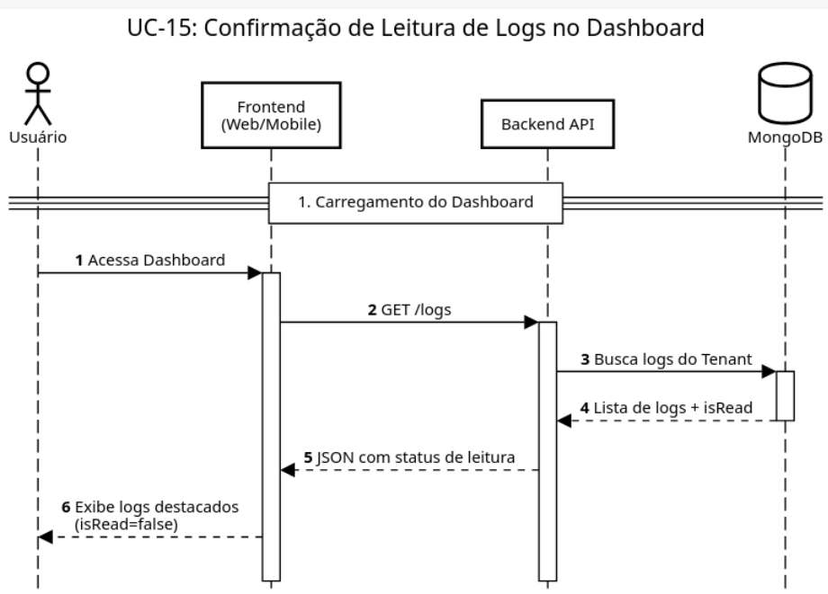
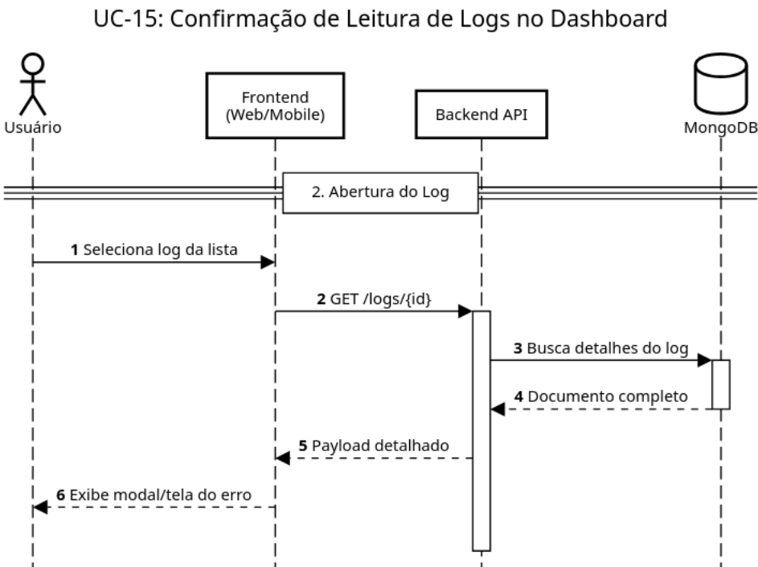
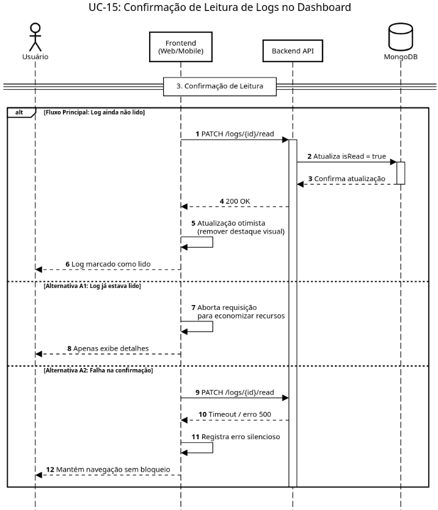

Minha equipe de software : Diagrama de Sequencia 15 - Confirmação de Leitura de Logs no Dashboard
Created by Michel Bocchi Junior on mai. 18, 2026

@startuml
!theme plain
autonumber
skinparam maxMessageSize 180
skinparam sequence {
ParticipantBackgroundColor #EBF8FF
ParticipantBorderColor #005A9C
ActorBorderColor #005A9C
DatabaseBackgroundColor #EBF8FF
DatabaseBorderColor #005A9C
}
title UC-15: Confirmação de Leitura de Logs no Dashboard
actor "Usuário" as User
participant "Frontend\n(Web/Mobile)" as UI
participant "Backend API" as API
database "MongoDB" as DB
== 1. Carregamento do Dashboard ==
User -> UI: Acessa Dashboard
activate UI
UI -> API: GET /logs
activate API
API -> DB: Busca logs do Tenant
activate DB
DB --> API: Lista de logs + isRead
deactivate DB
API --> UI: JSON com status de leitura
UI --> User: Exibe logs destacados\n(isRead=false)
@enduml

@startuml
!theme plain
autonumber
skinparam maxMessageSize 180
skinparam sequence {
ParticipantBackgroundColor #EBF8FF
ParticipantBorderColor #005A9C
ActorBorderColor #005A9C
DatabaseBackgroundColor #EBF8FF
DatabaseBorderColor #005A9C
}
title UC-15: Confirmação de Leitura de Logs no Dashboard
actor "Usuário" as User
participant "Frontend\n(Web/Mobile)" as UI
participant "Backend API" as API
database "MongoDB" as DB
== 2. Abertura do Log ==
User -> UI: Seleciona log da lista
UI -> API: GET /logs/{id}
activate API
API -> DB: Busca detalhes do log
activate DB
DB --> API: Documento completo
deactivate DB
API --> UI: Payload detalhado
UI --> User: Exibe modal/tela do erro
@enduml

@startuml
!theme plain
autonumber
skinparam maxMessageSize 180
skinparam sequence {
ParticipantBackgroundColor #EBF8FF
ParticipantBorderColor #005A9C
ActorBorderColor #005A9C
DatabaseBackgroundColor #EBF8FF
DatabaseBorderColor #005A9C
}
title UC-15: Confirmação de Leitura de Logs no Dashboard
actor "Usuário" as User
participant "Frontend\n(Web/Mobile)" as UI
participant "Backend API" as API
database "MongoDB" as DB
== 3. Confirmação de Leitura ==
alt Fluxo Principal: Log ainda não lido
UI -> API: PATCH /logs/{id}/read
activate API
API -> DB: Atualiza isRead = true
activate DB
DB --> API: Confirma atualização
deactivate DB
API --> UI: 200 OK
UI -> UI: Atualização otimista\n(remover destaque visual)
UI --> User: Log marcado como lido
else Alternativa A1: Log já estava lido
UI -> UI: Aborta requisição\npara economizar recursos
UI --> User: Apenas exibe detalhes
else Alternativa A2: Falha na confirmação
UI -> API: PATCH /logs/{id}/read
API --> UI: Timeout / erro 500
UI -> UI: Registra erro silencioso
UI --> User: Mantém navegação sem bloqueio
end
deactivate API
deactivate UI
@enduml
{kind=link}
{kind=link}
{kind=link}
{kind=link}